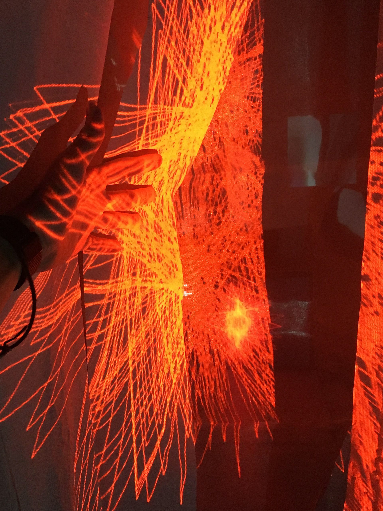
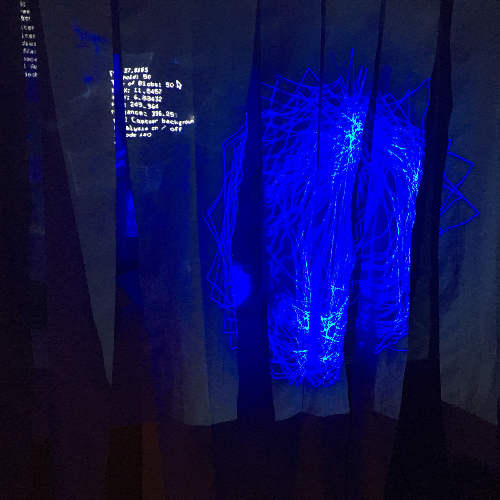

「境界」をテーマにしたインスタレーション作品。
自身を取り巻く様々なモノゴトの境界に対しその曖昧さ、各人による感受の差などに着目し制作した。
Concept
実際に体を動かし、耳を澄ませ、目を凝らす、それら行動全てを包括し様々なモノゴトに自身が自ら境界を定めていることに気づき、思案してもらうことを狙いとした。
Images
-  
About the production
名古屋市立大学芸術工学部の学生による作品展示会「卓展」で発表した作品。
画像処理を応用した動体検知システム構築、インスタレーション形式での作品制作など、自身にとって初挑戦な事が多く手探りでの制作となった。
しかし、スクリーン(グラスオーガンジー及びトイレットペーパーの複合体)の素材選定や設営位置など、細部までこだわることで、コンセプトに沿った形式でまとめることができ最終的に納得のいくものができた。